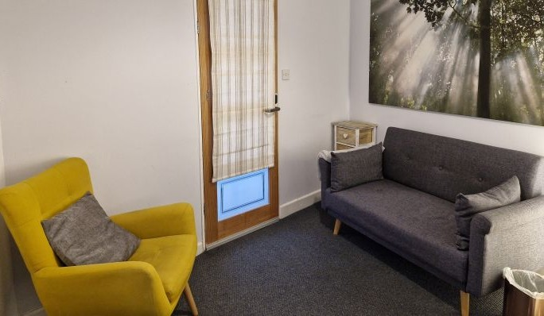
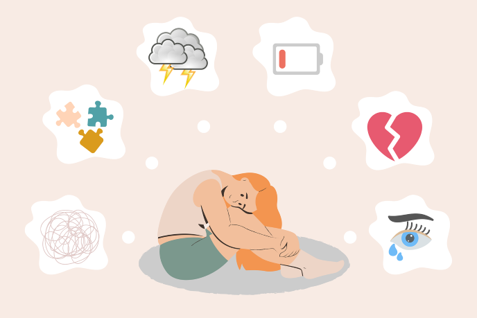
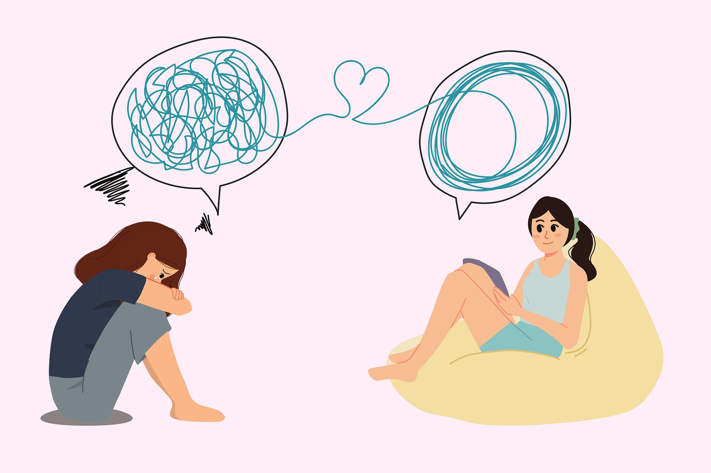
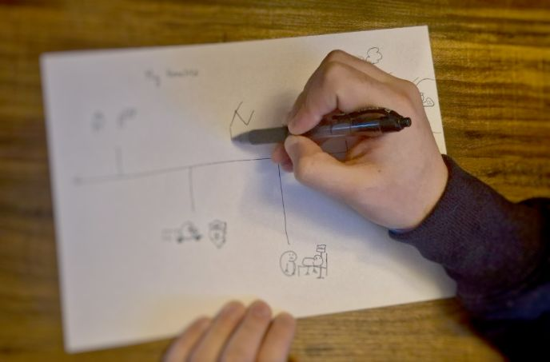

A Safe, Dedicated Space
Whether online or face-to-face in Thurmaston, your sessions provide a quiet, confidential environment to slow down and focus on what you need.
Psychotherapy and Counselling
Does it feel like the right time to make space for you?
Although you may already have a sense of why you are thinking about therapy, taking that first step can still feel daunting. It is completely natural to want reassurance that you are making the right choice, that you can trust your therapist, and that it will be a valuable space for you.
Therapy can represent a dedicated space in the week entirely for you. It offers a safe, warm, and non-judgemental environment to bring difficult memories and day-to-day challenges, and to untangle complex relationships with someone removed from your everyday life.
Having worked with clients for four years, I have felt privileged to walk alongside people through moments of deep despair as well as to celebrate their growth and changes. I work collaboratively, adapting therapy to suit your unique needs to help you find your direction and make sense of your experiences at your own pace.

Therapy sessions are usually regular (weekly or fortnightly) and last 50 minutes. We can work short-term for around six sessions, or longer-term, and there is no limit on the number of sessions or times we can work together.
I work online with Zoom or Google Meet, and also have a therapy room in Thurmaston, Leicestershire, for face-to-face sessions.
I work with adult clients on a one-to-one basis. Although anybody is welcome to contact me for therapy, I have particular experience with:
Clients come to me for many different reasons, but a core focus of my work has been:

Whatever you are carrying, you don't have to navigate it alone. We will work at a pace that feels safe, collaborative, and useful for you.
Starting therapy can feel like a big step, so it's important that you feel comfortable with me before committing. I offer a free 15-minute phone or video call where we can briefly talk through what you're looking for, answer any questions you have, and see if I feel like the right therapist for you.
I work with clients on an ongoing basis, usually meeting weekly or fortnightly at a regular time that works for you. Each 50-minute session takes place either online or in person in Thurmaston, Leicestershire.
I offer a select number of reduced-fee spaces for students and those in receipt of benefits. Please feel free to mention this when you get in touch, and we can discuss current availability.
Payments are made via bank transfer, and I kindly ask for at least 48 hours' notice if you need to cancel or reschedule a session.
MSc Person-centred and Experiential Psychotherapy at Sherwood Psychotherapy Training Institute, Nottingham (Expected August 2027).
I have completed the postgraduate diploma component of my course alongside all clinical hours. I am a Trainee member of the UKCP and a Student member of BACP, abiding by their ethical guidelines. My counselling training largely builds on Carl Rogers' foundational work on the person-centred approach, alongside modern research and developments in the wider therapy field.
Level 2 Counselling Skills at Leicester College, Leicester.
Additional professional training includes:

A space to speak freely about your thoughts and feelings without fear of judgement.
If you want therapy where you feel truly listened to and understood, but also want your therapist to be authentic and real, then person-centred counselling might be a good fit.

An immersive approach engaging the whole body and emotions using physical and creative methods to build understanding of your inner experience.
I'm Xanthe, a trainee psychotherapist based in Leicestershire. I was drawn to counselling training after working one-to-one with students for several years, and wanting to continue to support people in different life stages. During my training, I have found therapy to be most effective when I show up alongside my clients in a real, genuine way, holding connection in moments of sadness, laughter and everything between. Although our focus is always on what you need, you can trust me to be honest and transparent about the therapy process, so you feel in control at every step.
Outside the therapy room, I love playing video games with my family and trying out new crafts. I also spend a lot of time out in nature, keeping an eye out for interesting birds and plants.
Our therapy sessions are usually open and exploratory, moving between present-day and past experiences, depending on what you want from each session. My clients would describe me as warm, understanding, and able to build strong sense of safety. This can make it easier to bring your feelings and emotions, knowing I can handle them. I aim to be collaborative and flexible, following your lead and keeping your goals at the heart of our work. At the same time, I show up authentically, comfortable sharing insights and suggestions, if that might be helpful.
If you'd like to arrange a free 15-minute introductory call or have any questions about working together, please fill in the form below. I aim to respond to all enquiries within 72 hours.
Please note that I am unable to offer an emergency or crisis service. If you are in immediate distress or feel unable to keep yourself safe, please contact your GP, call NHS 111 (select option 2 for mental health support), call the Samaritans free on 116 123 (24/7), text SHOUT to 85258, or call 999 / visit A&E in an emergency.